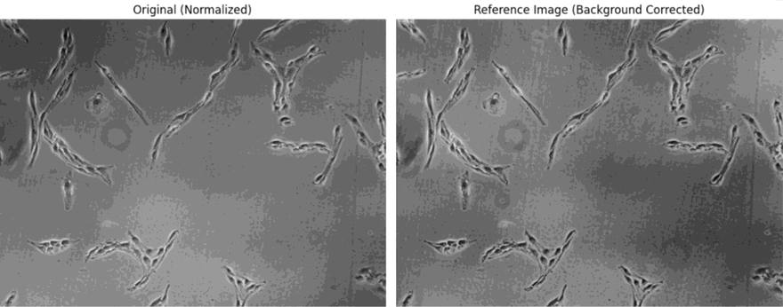
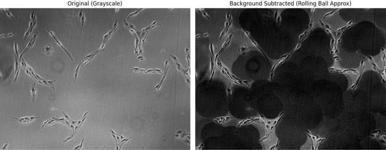
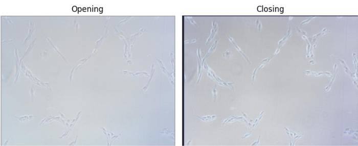
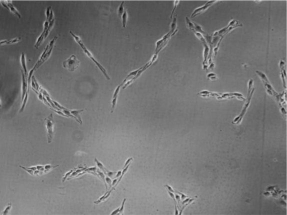
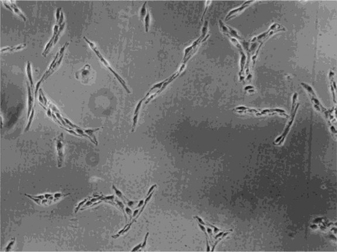
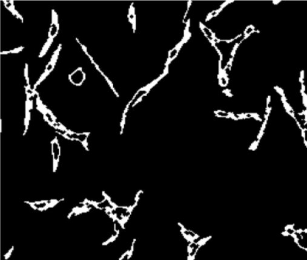

Phase contrast and DIC microscopes turn optical path differences into brightness — which means they also turn uneven illumination into brightness, and automated analysis ends up measuring the lamp instead of the cells.
This project compares classical background-correction methods against a retrained U-Net on the same microscopy dataset, scored with PSNR and SSIM against acceptance criteria fixed before the experiment was run. The tool below runs the classical methods on a real field of view in your browser.
Phase contrast and DIC microscopy image living, unstained cells. No dyes, no fixation, no phototoxicity — which is exactly why they are used for live-cell work. Both convert optical path length differences into intensity, so a cell that is invisible under brightfield becomes visible.
The same physics creates the problem. Uneven lamp illumination, halo artefacts at cell edges, and a slowly varying gradient across the field of view all arrive as intensity too, and a segmentation algorithm cannot tell them apart from biology. Background removal is the preprocessing step that decides whether everything downstream is measuring cells or measuring light.
The aim was to evaluate classical and AI-based background removal on the same data. Four objectives: implement the classical methods, train a U-Net, compare them using PSNR and SSIM, and assess the effect on image analysis.
Background here means the slowly varying part: lamp falloff, shadowing, gradient bias. Signal means cell bodies, boundaries and internal structure — higher spatial frequency and spatially localised. The difficulty is that halo artefacts sit right at cell edges, close to the signal in both space and frequency, so a simple high-pass filter removes the cells along with the lamp.

Everything below is computed in your browser, now, on the image shown. Choose a method, move its parameter, and watch PSNR and SSIM respond — the parameter sensitivity that makes the classical methods hard to deploy is the thing you can feel here. Load one of your own microscopy images to see how it behaves on data it was never tuned for.
Every method here is trying to answer one question: which part of this image is the lamp? They differ in what they assume the lamp looks like.


Where the classical methods assume a model of what the background looks like, the U-Net learns the foreground/background distinction from labelled examples. It predicts a foreground probability for every pixel, thresholded at 0.5 and cleaned with a 1-pixel opening and small-hole filling.
Skip connections are why the architecture suits this problem. The encoder discards spatial precision as it downsamples; concatenating the encoder features back in at each decoder level is what lets the network suppress a broad illumination gradient without also smoothing away cell boundaries.



All three panels are the same field of view, taken from the thesis. No residual image is shown: the U-Net output is a binary foreground mask, so subtracting it from a greyscale reference would not produce anything interpretable.
What the result means. The U-Net was the only one of the three scored methods to clear both thresholds. Its spread matters as much as its mean: at ±0.9 dB and ±0.02 SSIM it is the tightest of the three, so performance is consistent across fields of view rather than excellent on some and poor on others.
What it does not mean is that deep learning is the right answer in general. This cost annotated training data and GPU time, against classical methods that need neither. And it is one dataset, one modality pairing, one magnification — the thesis is explicit that generalisation to other microscopes and cell types is untested.
Reproduced from the model summary in thesis Table 1. Input 256×256×3.
| Stage | Layers | Output shape | Parameters |
|---|---|---|---|
| Encoder 1 | conv2d, conv2d_1 | 256 × 256 × 64 | 1,792 + 36,928 |
| Encoder 2 | conv2d_2, conv2d_3 | 128 × 128 × 128 | 73,856 + 147,584 |
| Encoder 3 | conv2d_4, conv2d_5 | 64 × 64 × 256 | 295,168 + 590,080 |
| Encoder 4 | conv2d_6, conv2d_7 | 32 × 32 × 512 | 1,180,160 + 2,359,808 |
| Bottleneck | conv2d_8, conv2d_9 | 16 × 16 × 1024 | 4,719,616 + 9,438,208 |
| Decoder 4 | conv2d_transpose, concatenate, conv2d_10, conv2d_11 | 32 × 32 × 512 | 2,097,664 + 4,719,104 + 2,359,808 |
| Decoder 3 | conv2d_transpose_1, concatenate_1, conv2d_12, conv2d_13 | 64 × 64 × 256 | 524,544 + 1,179,904 + 590,080 |
| Decoder 2 | conv2d_transpose_2, concatenate_2, conv2d_14, conv2d_15 | 128 × 128 × 128 | 131,200 + 295,040 + 147,584 |
| Decoder 1 | conv2d_transpose_3, concatenate_3, conv2d_16, conv2d_17 | 256 × 256 × 64 | 32,832 + 73,792 + 36,928 |
| Output | conv2d_18, sigmoid | 256 × 256 × 1 | 65 |
The evaluation step is the one that needs explaining. Real microscopy data has no ground-truth background-free image, so scoring a method against its own input would measure how much it changed the image, not whether the change was correct. A per-field-of-view reference is constructed instead: normalise, estimate the illumination field by morphological opening at radius 80 px, smooth it with a 2D third-order polynomial surface, subtract, then histogram-match back to the original so intensity statistics stay comparable. Every method is scored against that.
The split is by field of view, not by image. Patches drawn from the same field share an illumination gradient and often the same cells, so splitting by image would leak that structure across the train/test boundary and inflate the test score. This is the single most consequential methodological decision in the study.
Preprocessing: greyscale conversion, normalisation to [0, 1], optional histogram equalisation for visual inspection, border-artefact handling and intensity-clipping treatment, and removal of duplicate and corrupted frames. Optional median 3×3 or Gaussian σ=0.5 smoothing was available in the parameter study.
| Method | PSNR (dB) | SSIM | PSNR ≥ 26 | SSIM ≥ 0.80 | Passes |
|---|---|---|---|---|---|
| Rolling ball / opening | 24.1 ± 1.3 | 0.72 ± 0.04 | No | No | No |
| Morphological (white top-hat) | 25.6 ± 1.1 | 0.78 ± 0.03 | No | No | No |
| U-Net (retrained) | 28.4 ± 0.9 | 0.86 ± 0.02 | Yes | Yes | Yes |
Mean ± SD on the held-out test set. Acceptance criteria were fixed before the experiment: PSNR ≥ 26 dB and SSIM ≥ 0.80.
The U-Net performed best and was the only method to meet both criteria — 28.4 dB and 0.86, against thresholds of 26 dB and 0.80. The two classical methods fell short, and they fell short for reasons that match their mechanics rather than looking like random failure.
Rolling ball is lowest on both. It estimates the background from the image itself, so anything low in contrast is indistinguishable from background and is subtracted along with it. Visual inspection confirms this: gradient correction is good, faint structures are lost.
White top-hat improves on it by 1.5 dB and 0.06 SSIM because it works on local structure rather than one global surface. But it amplifies high-frequency content indiscriminately, and noise is high-frequency content. Its margin to the SSIM threshold is only 0.02 — close enough that a different structuring element could plausibly cross it, which is worth stating rather than glossing over.
The U-Net's spread matters as much as its mean. At ±0.9 dB and ±0.02 SSIM it is the tightest of the three, meaning performance is consistent across fields of view rather than excellent on some and poor on others.
What this does not show: that deep learning is the right choice in general. The classical methods are seconds of compute, no training data, no GPU. When the correction needed is a simple illumination gradient and the structures of interest are well contrasted, they remain the correct engineering choice. It also does not show clinical validity — this is a methods comparison on one public dataset, not a validated clinical tool.
The reference image the methods are scored against is itself constructed, and its construction has free parameters. A ranking that changes when those parameters change is not a ranking. So the reference was rebuilt across a range of settings and the metrics re-measured.
| Parameter varied | Range tested | Effect on PSNR | Effect on SSIM |
|---|---|---|---|
| Opening radius | 60–100 px | < 0.3 dB | < 0.01 |
| Gaussian σ | 30–40 | < 0.3 dB | < 0.01 |
Both variations are smaller than the gap between any two methods, so the ranking is not an artefact of how the reference was built. The parameter study also swept rolling-ball and opening radii at {30, 50, 80} px and top-hat at {5, 15, 25} px.
This is methodological robustness testing on one dataset. It is not clinical validation, and nothing here has been assessed against a clinical endpoint or reviewed by a regulatory body.
# seeds, as fixed in the thesis PYTHONHASHSEED=0 np.random.seed(42) tf.random.set_seed(42) # split: train 70% / val 15% / test 15%, by field of view (no leakage) git clone https://github.com/lokesh-rajagopal/microscopy-background-removal pip install -r requirements.txt python src/unet/train.py --data data/miniglioma_usiigaci python src/run_comparison.py --data data/miniglioma_usiigaci/test --out results/